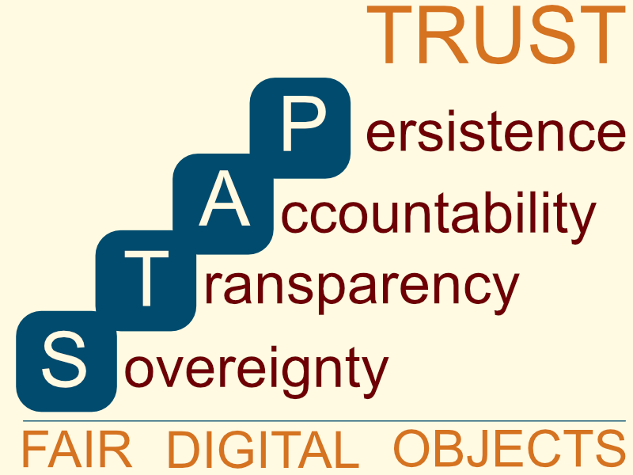

3rd FAIR Digital Objects Conference
Call for Papers, Posters & Lightning Talks
Version 1.10.2025
Deadline for submissions: 26. October 2025
November 2nd 2025 (closed)
FAIR Digital Objects (FDO) are autonomous information units that virtually bind all information in a machine-actionable way that is required to make data FAIR, including various kinds of metadata and globally unique and resolvable persistent identifiers (PIDs).
FDOs provide a conceptual and implementation framework to develop scalable cross-disciplinary capabilities, deal with increasing data volumes and their inherent complexity, build tools that help increase trust in data, create mechanisms to efficiently operate in the domain of scientific assertions, and promote data interoperability. In addition, FDOs play a foundational role in implementing widely accepted trust frameworks, which are characterised by the STAP principles (Sovereignty, Transparency, Accountability, Persistence). These principles underpin large-scale data exploration supported by AI.
About the Conference
For the third time at this scale, the FDO2026 Conference (link) will bring together leading experts from science and industry, technologists, data stewards/managers, researchers and policymakers engaged in advancing FAIR Digital Objects (FDOs). The conference will feature a mix of invited presentations, panels, posters and demonstrators. It will be associated with a day of tutorials and a newcomer session.

The first conference focused on discussing and finalising basic specifications, while the second conference concentrated on practical implementations of the FDO concept (testbeds, demonstrators). This third conference will explore the relevance of the FDOs for turning to a global data landscape characterised by the STAP Principles, tackle the integration of FDOs with data use control technologies (dataspace technologies) and examine the challenges and showcase successful demonstrations of interoperability between different implementations.
The conference will take place at the facilities of the Technische Universität Wien, Vienna, Austria.
Expected Contributions
For the conference the organisers are seeking contributions that (1) offer insights into practical developments and real-world functionality of FAIR Digital Objects (FDOs), or (2) outline strategic plans for their adoption, or (3) demonstrate how FDOs can interoperate and thus contribute to the advancement of global trust frameworks guided by the STAP principles.
We invite the submission of extended abstracts consistent with the conference themes and objectives and address FDOs, in particular:
- Use of the FDO concept for structuring the emerging domain of disciplinary and interdisciplinary knowledge in the research domain.
- Importance of FDOs’ abstraction, binding and encapsulation properties for data-driven and cross-domain research.
- Use of FDOs in data-driven projects or processes from the perspective of researchers and/or technologists using different approaches.
- Reports on implementations of FDOs and associated components such as PIDs, PID/FDO Profiles, PID Kernel Attributes, Types, Type Registries, DOIP, FDO-compliant repositories, Signposting, RO-Crate, Nanopublications, etc.
- Plans and use of FDOs to implement operations, workflows, secure environments and collections.
- Applications of FDOs in research-based education or in specific skills development.
- Showcases where FAIR Implementation and FDO compliance profiles led to a change of practices towards FDO usage or consumption, particularly across FDO deployments.
- Validation or evaluation of FDOs, FDO profiles and/or FDO types.
- Use of FDOs to build a cross-disciplinary, global and distributed testbed.
- Implementing FDOs in the realm of dataspace technology to build bridges.
- FDO interoperability solutions to enable cross-walks.
- FDO in the European Open Science Cloud or any other funding program.
- Experiences of adopting FDO approaches in infrastructures and pathways to adoption.
- The potential of FDOs to increase FAIRness and support Open Science.
- The potential of FDOs to build a global data landscape characterised by trust dimensions such as “data sovereignty, transparency, accountability, and persistence (STAP)”.
- Other contributions that focus on the concept, development, or application of FDOs.
Please note: Contributions that address FAIR and trust dimensions in a general way should be submitted to other conferences, here we are asking for contributions to be related to FDO conceptualisation, FDO realisation and FDO usage.
Submission of abstracts for Papers and Lightning Talks
For presentations, please submit extended abstracts of up to two pages (excluding references and diagrams). For posters and lightning talks, submit extended abstracts of up to one page (excluding references and diagrams).
Abstract submissions should clearly indicate:
(i) how the work relates to the FDO concept
(ii) whether it is conceptual work, implementations, or applications
(iii) whether the submission is for a presentation, a poster or a lightning talk.
We will publish the abstracts and the full papers of accepted presentations and lightning talks via the peer-reviewed TIB Open Publishing (OJS) publication option.
All submissions will be peer-reviewed by members of the program committee. Evaluation criteria include: timeliness and relevance, substance and soundness, clarity and potential impact.
Prizes will be awarded in the final session to the best three lightning talks (based on content and presentation) as voted by the conference participants.
Submission Process
- Deadline for submissions: November 2nd 2025 (extended)
- Submission Link: https://www.tib-op.org/ojs/index.php/fdo/about/submissions
- Notification of acceptance: 15 December 2025
- 24:00 AOE Timezone, also -12h